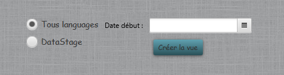

Création Vue Trimestrielle
Cette fonction permet de créer les vues de mise en production trimestrielle des composants. Il y a deux choix possibles :
- Prise en compte de tous les types de composant.
- Prise en compte que des composants DataStage.
Pour créer la vue, il suffit de choisir une des deux options et de selectionner une date qui sera la date de départ de calcul des 3 mois.
